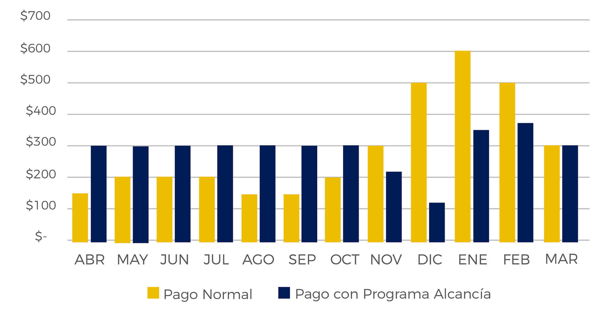

Ventajas de Gas Natural
- El gas natural es el combustible que menos contamina el ambiente, debido a que en su combustión no se generan gases tóxicos cenizas ni residuos.
- Su transporte y distribución se realiza mediante tuberías subterráneas, por lo que no daña el paisaje ni atenta contra la vida animal o vegetal.
- Más económico que otros combustibles.
- Se dispone de él las 24 horas y los 365 días.
- Pagos en centros comerciales, bancos, tiendas de conveniencias, y otros.
- Por ser más liviano que el aire, el gas natural rápidamente se dispersa en el aire minimizando el riesgo.
- Al ser distribuido el gas a las casas a bajas presiones, constituye un bajo riesgo para las familias que lo consumen.
